Toutes les captures de ce manuel sont prises avec des données d'exemple : les noms, montants, adresses et documents sont fictifs.
Sommaire
Premiers pas
La barre de gauche
Mois
Importer un relevé
Prévisionnel
Aide au budget
Bilan
Documents
Mail
Achats
Lettres
Assistant
Crédits
Prêts
Bourse
Impôts
Vue d'ensemble
Configuration
Compte Google et IA gratuites
Données dans Google Drive
Sauvegarde et confidentialité
Aide
1. Premiers pas
Installer
Mon Budget tient en un seul fichier, GestionCompte.exe, sans installation. Copiez-le où vous voulez (par exemple sur le Bureau) et lancez-le.
Windows ou Chrome peuvent afficher un avertissement, car l'application n'est pas signée par un éditeur payant.
Chrome : ouvrez les téléchargements (Ctrl + J) et choisissez « Conserver ».
Windows : sur « Windows a protégé votre ordinateur », cliquez sur « Informations complémentaires », puis « Exécuter quand même ».
Le premier lancement
Une courte vidéo du canard s'affiche quelques secondes, sans le son ; un clic la passe (désactivable dans Configuration › Modules).
Ouvrez Configuration : premier mois, solde de départ, charges, revenus et enveloppes.
Revenez dans Mois et créez votre premier mois : charges et revenus y sont ajoutés automatiquement.
Chaque mois, importez le relevé de la banque ou pointez les opérations à la main.
Tout est enregistré automatiquement, au fil de la saisie.
2. La barre de gauche
Elle est la même dans tous les onglets.
Zone
Rôle
Compte
Choisit le compte affiché (compte principal, compte joint, livret…). « Nouveau » crée un compte ; le crayon le renomme ; la corbeille le supprime. Chaque compte a son propre fichier et sa propre configuration, qu'on peut copier depuis un autre compte.
Onglets
Rangés en trois thèmes : Budget (Mois, Prévisionnel, Aide au budget, Bilan), Finances (Crédits, Prêts, Bourse, Impôts) et Outils (Documents, Mail, Achats, Lettres, Assistant). Un clic sur le titre d'un thème l'ouvre et referme les autres ; le thème de l'écran affiché s'ouvre tout seul, et le choix est retenu. Vue d'ensemble, Configuration et Aide (ce manuel) restent toujours visibles. Chaque compte a ses modules : masquez ceux qui ne servent pas et rangez-les avec les flèches ↑ ↓ dans Configuration › Modules. « Suggérer une amélioration » ouvre un court formulaire en ligne, sans compte à créer.
☰ (en haut)
Réduit la barre aux seules icônes pour agrandir l'écran ; le nom de chaque module s'affiche au survol. Un nouveau clic remet la barre en entier.
Apparence
Thème de couleurs (Océan, Pastel, Nuit…) et case « Mode sombre ».
Données
Importer un relevé, Enregistrer une copie (du compte ouvert), Sauvegarder tout, Restaurer une sauvegarde, Restaurer tout, Ouvrir le dossier des données, Réinitialiser (effacer les mois ou tout effacer).
Sur un petit écran, la barre défile avec la molette pour atteindre Apparence et Données.
3. Mois
L'écran principal : un mois à la fois, avec son solde calculé ligne par ligne.
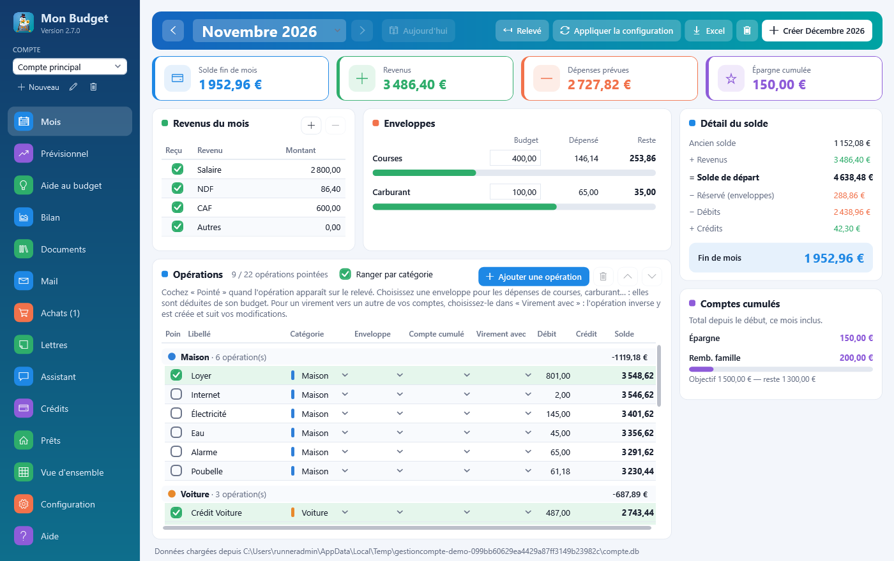
Novembre 2026, thème Océan.
L'application s'ouvre sur le mois en cours (ou le dernier mois créé avant lui).
En haut : flèches et liste pour changer de mois, « Aujourd'hui » pour revenir au mois en cours, « Relevé » pour importer, « Appliquer la configuration » pour reprendre les montants de Configuration, « Excel » pour exporter, et « Créer » pour le mois suivant.
Les quatre chiffres : solde de fin de mois, revenus, dépenses prévues, épargne cumulée.
Revenus du mois : cochez « Reçu » quand l'argent est arrivé.
Enveloppes : budget, déjà dépensé et reste (courses, carburant…). Le reste est réservé dans le solde.
Opérations : cochez « Pointé » quand l'opération apparaît sur le relevé ; la ligne passe en vert. Choisissez une enveloppe pour une dépense de courses ou de carburant, ou un compte cumulé pour l'épargne.
Catégories : choisissez une catégorie de couleur dans la colonne « Catégorie » (ex. « Maison »). Les opérations sont rangées par catégorie, avec le nombre et le total de chacune ; décochez « Ranger par catégorie » pour revenir à l'ordre de saisie. Le solde ligne par ligne suit l'ordre affiché.
Virement avec (quand vous avez plusieurs comptes) : pour un virement vers un autre de vos comptes (livret, compte joint…), choisissez ce compte. L'opération inverse y est créée automatiquement dans le même mois (un crédit pour un débit), et le mois est créé s'il n'existe pas encore. Si vous modifiez ou supprimez le virement, d'un côté ou de l'autre, l'autre côté suit. Le pointage reste propre à chaque compte.
Détail du solde : ancien solde + revenus = solde de départ, puis réservé, débits et crédits jusqu'à la fin de mois.
Comptes cumulés : total depuis le début (épargne, remboursements) et objectif restant.
Virements entre vos comptes
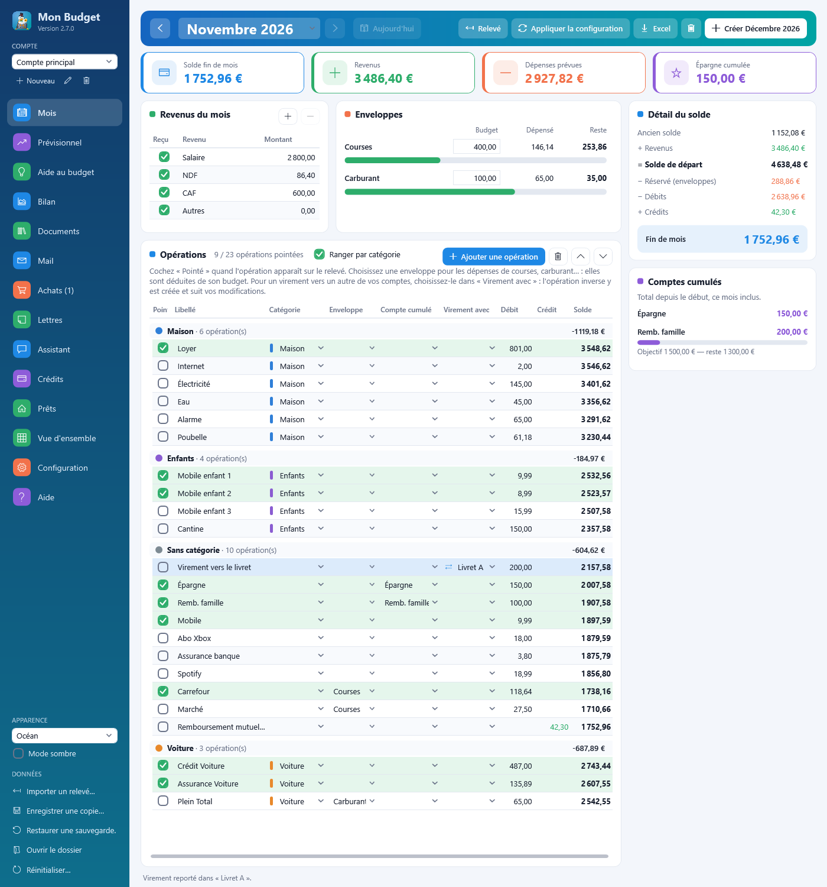
« Virement vers le livret » : 200 € débités ici sont crédités automatiquement dans « Livret A ».
4. Importer un relevé
Téléchargez le relevé sur le site de votre banque au format OFX ou QIF (Fortuneo…), puis « Relevé » (onglet Mois) ou « Importer un relevé… » (barre de gauche). Le fichier est lu sur votre PC uniquement. Sous ce bouton, la date de la dernière opération importée indique à partir de quand télécharger le relevé suivant.
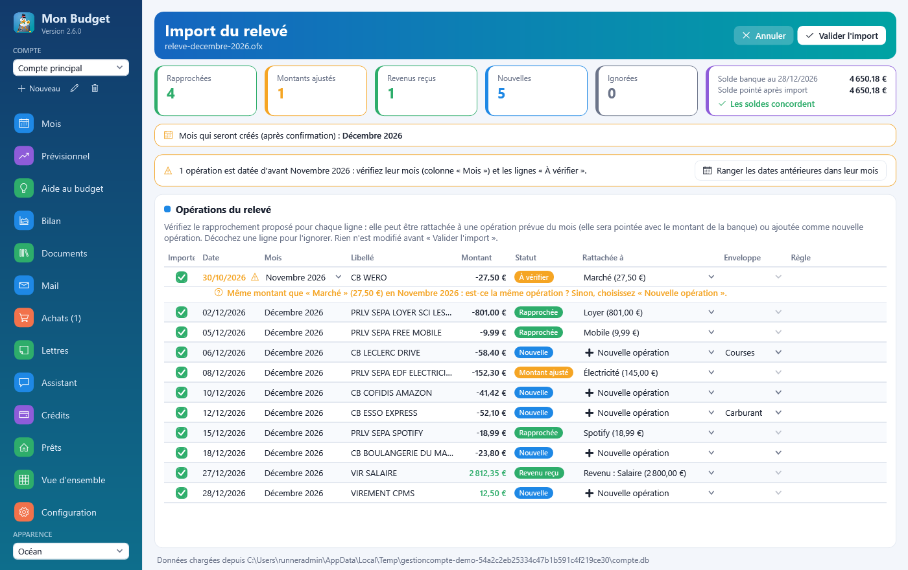
Chaque ligne du relevé est rapprochée d'une opération prévue ou ajoutée.
Rapprochée : l'opération prévue est pointée. Montant ajusté : pointée avec le montant de la banque. Revenu reçu : le revenu est coché. Nouvelle : ajoutée au mois.
Les règles de classement (Configuration) rangent les nouvelles dépenses dans une enveloppe d'après le libellé (LECLERC → Courses…).
Décochez une ligne pour l'ignorer. Les opérations déjà importées sont ignorées automatiquement, et le numéro de compte du relevé est contrôlé.
Date antérieure au mois (alerte orange) : un relevé qui chevauche deux mois contient des opérations datées du mois précédent. Elles vont par défaut dans le mois en cours, même celles du mois juste avant le premier mois géré (les mois plus anciens sont ignorés) ; la colonne « Mois » permet de choisir le mois de leur date, et le bouton « Ranger les dates antérieures dans leur mois » le fait pour toutes.
À vérifier : pour ces opérations, l'application cherche le même montant dans le mois de leur date puis dans le mois en cours, même avec un autre libellé (WERO pour un abonnement saisi à la main). La ligne y est rattachée et la question s'affiche dessous ; si le montant est déjà pointé à la main dans le mois de sa date, la ligne est décochée pour éviter un doublon. « Valider l'import » récapitule ces lignes avant d'importer.
Le cadre de droite compare le solde de la banque et le solde pointé : « Les soldes concordent » quand tout est juste. Un relevé QIF ne donne pas le solde de la banque : ce cadre n'apparaît pas.
La date d'achat écrite dans le libellé (« CARTE 09/10 BOULANGERIE ») est retirée, pour que le libellé reste le même d'un mois à l'autre.
Rien n'est modifié avant « Valider l'import ». Les mois manquants sont créés après confirmation.
5. Prévisionnel
Les mois à venir sont simulés avec votre configuration et vos opérations prévues, sur 12 mois ou la durée choisie en haut à droite. La prévision commence au mois suivant le mois en cours : les mois déjà créés à l'avance y sont comptés comme « Prévu », avec ce que vous y avez saisi.
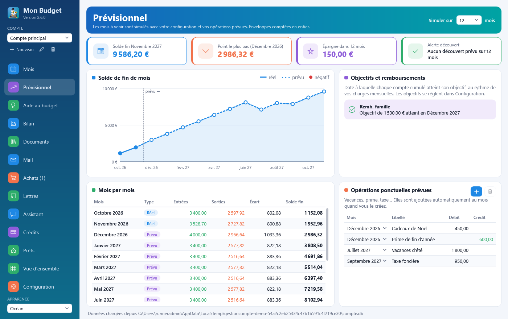
Le graphique montre le solde de fin de mois : trait plein pour le réel, pointillé pour le prévu, point rouge en cas de découvert.
« Alerte découvert » prévient si un mois passe sous zéro, et « Point le plus bas » donne le mois le plus serré.
Opérations ponctuelles prévues : vacances, prime, taxe foncière… Elles sont ajoutées au mois quand vous le créez.
Objectifs et remboursements : date à laquelle chaque compte cumulé atteint son objectif.
6. Aide au budget
Des conseils calculés sur votre PC à partir de la configuration et des mois passés.
Répartition 50 / 30 / 20 : essentiel, confort, épargne, comparés à la règle courante. Les catégories se choisissent pour chaque charge dans Configuration.
Analyse des charges : coût par mois et par an, part des revenus, et familles à regarder (plusieurs assurances, plusieurs forfaits mobiles…).
Suivi réel des enveloppes : dépense moyenne des derniers mois et bouton pour ajuster le budget en un clic.
Objectifs d'épargne : montant, date visée, mensualité nécessaire et statut « Tenable » ou non. Un objectif peut être alimenté par un compte cumulé, et les flèches changent sa priorité.
Simulateur « Et si… ? » : décochez une charge ou changez un montant pour voir le gain par mois et le solde dans 12 mois. Rien ne change tant que vous n'appliquez pas.
7. Bilan
Le bilan d'une année, ou des 12 derniers mois, comparé à la même période un an plus tôt.
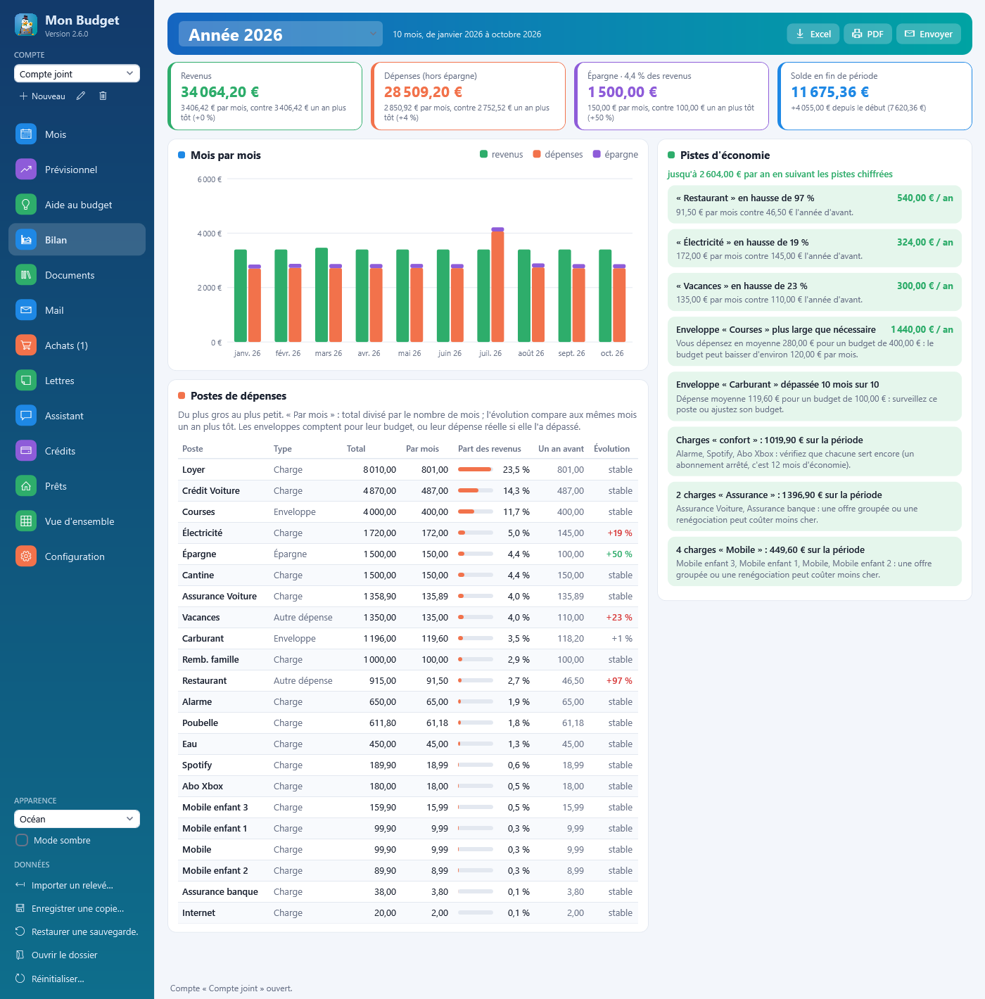
Quatre chiffres : revenus, dépenses hors épargne, épargne et solde en fin de période, avec l'évolution sur un an.
Mois par mois : revenus, dépenses et épargne en barres.
Postes de dépenses : du plus gros au plus petit, avec la part des revenus et l'évolution.
Pistes d'économie : postes en hausse, enveloppe trop large ou dépassée, abonnements à vérifier, charges à regrouper, avec le gain estimé par an.
« Excel » et « PDF » enregistrent le bilan ; « Envoyer » le joint à un mail.
8. Documents
Le coffre des papiers importants, commun à tous les comptes.
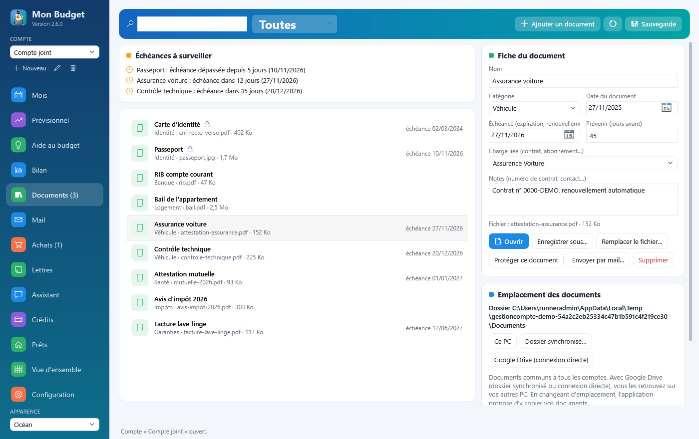
« Ajouter un document » : nom, catégorie (identité, banque, logement, véhicule, santé, impôts, garanties…), date, échéance et nombre de jours pour être prévenu.
Échéances à surveiller : passeport, assurance, contrôle technique… Le nombre de rappels s'affiche aussi à côté de l'onglet.
Un document peut être lié à une charge (contrat d'assurance) et recevoir des notes.
Protéger ce document : mot de passe facultatif, avec une clé de secours à noter.
Emplacement : ce PC, un dossier synchronisé, ou Google Drive en direct pour retrouver les documents sur un autre PC.
9. Mail
Envoyer un mail avec des pièces jointes du coffre ou du bilan, sans ouvrir de messagerie.
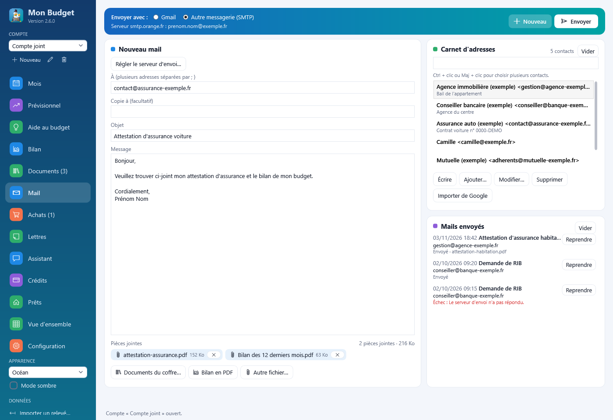
Envoyer avec : Gmail (compte Google connecté) ou une autre messagerie (Orange, Free…) réglée avec « Régler le serveur d'envoi… ».
Pièces jointes : « Documents du coffre… », « Bilan en PDF » ou « Autre fichier… ».
Carnet d'adresses : « Ajouter… », « Modifier… », « Importer de Google ». Double-clic ou « Écrire » ajoute le contact aux destinataires.
Nouveau en 2.3.0 : Ctrl + clic ou Maj + clic pour choisir plusieurs contacts, puis « Écrire » ou « Supprimer » pour toute la sélection. « Vider » retire tous les contacts, après confirmation. Les contacts Google reviennent si vous les importez de nouveau.
Mails envoyés : historique des envois, « Reprendre » pour renvoyer un mail semblable, « Vider » pour effacer l'historique.
10. Achats
Trouver le meilleur prix d'un produit et surveiller son prix.
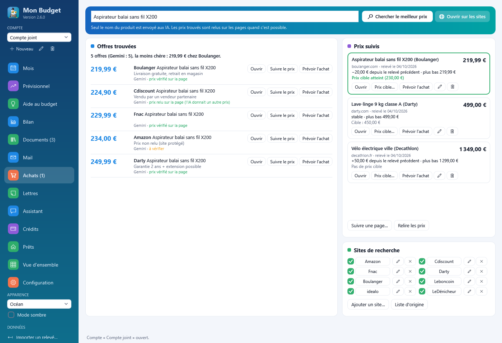
Tapez le produit et « Chercher le meilleur prix ». Seul le nom du produit est envoyé à l'IA. Les prix trouvés sont relus sur les pages quand c'est possible (« prix vérifié sur la page », ou « à vérifier »).
« Ouvrir sur les sites » lance la recherche sur chaque site de la liste « Sites de recherche », que vous pouvez modifier.
Suivre le prix : le produit passe dans « Prix suivis », avec un prix cible et l'historique. « Relire les prix » les met à jour.
Prévoir l'achat : ajoute la dépense au prévisionnel.
La recherche de prix a besoin de la recherche internet. Les clés Gemini gratuites ne l'incluent pas ; Groq la propose (depuis la version 2.4.0). Si une clé la refuse, l'application le dit, et « Ouvrir sur les sites » reste possible.
11. Lettres
Des lettres types rédigées par les IA : résiliation, contestation de frais, réclamation, garantie, délai de paiement… ou lettre libre.
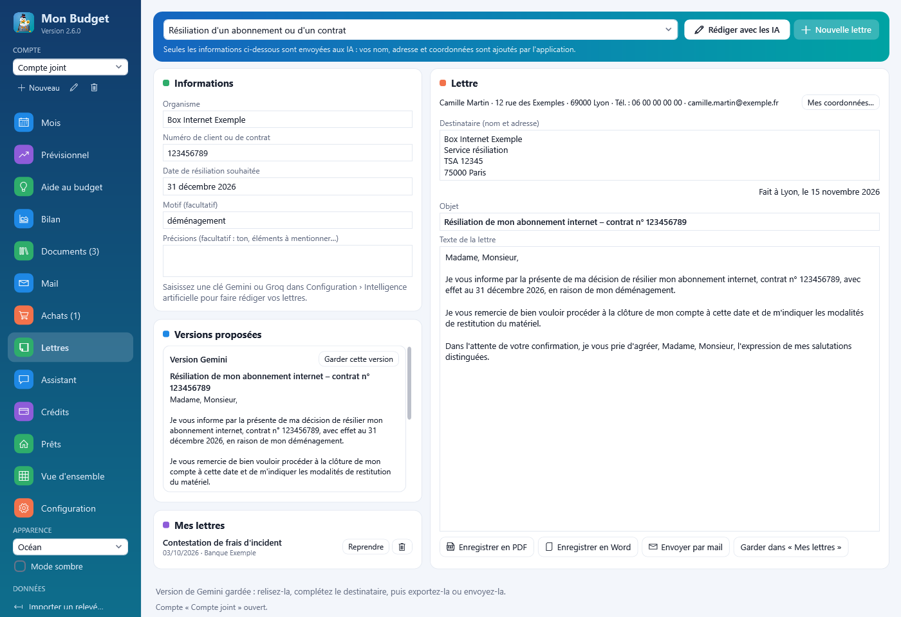
Choisissez le modèle, remplissez les informations, puis « Rédiger avec les IA ». Une version par IA s'affiche dans « Versions proposées » : « Garder cette version » la reprend dans la lettre.
Vos nom, adresse et coordonnées (« Mes coordonnées… ») ne sont jamais envoyés aux IA : l'application les ajoute elle-même.
Relisez, puis « Enregistrer en PDF », « Enregistrer en Word », « Envoyer par mail » ou « Garder dans Mes lettres ».
12. Assistant
Poser une question sur son budget aux IA cochées en haut de l'écran (Gemini, Groq, Mistral).
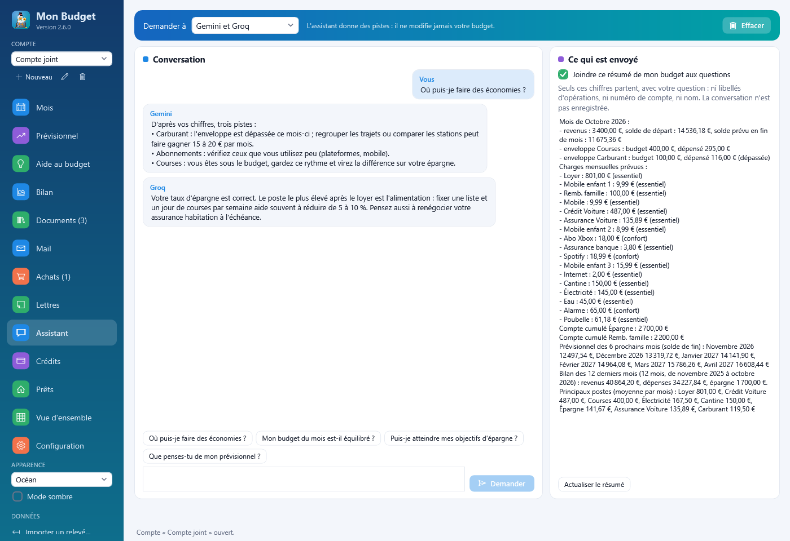
Choisissez l'IA en haut, tapez la question ou cliquez sur une question proposée, puis « Demander ».
Ce qui est envoyé : le résumé chiffré affiché à droite, seulement si la case est cochée. Ni libellés d'opérations, ni numéro de compte, ni nom.
L'assistant donne des pistes : il ne modifie jamais votre budget. La conversation n'est pas enregistrée ; « Effacer » la vide.
13. Crédits
Simuler et comparer des crédits (immobilier, auto / moto, consommation), puis ajouter les échéances au prévisionnel.
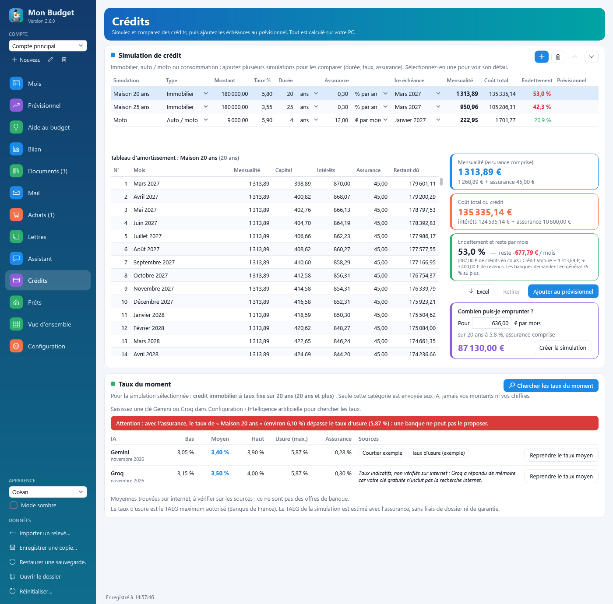
« + » ajoute une simulation : montant, taux, durée, assurance, première échéance. La mensualité, le coût total et le taux d'endettement se calculent aussitôt.
Sélectionnez une simulation pour voir son tableau d'amortissement, le reste par mois, « Excel » et « Ajouter au prévisionnel ».
Combien puis-je emprunter ? : le montant possible pour une mensualité donnée, avec « Créer la simulation ».
Taux du moment : les IA cherchent les taux bas, moyens et hauts, le taux d'usure et l'assurance. Seule la catégorie de crédit est envoyée. « Reprendre le taux moyen » l'applique à la simulation. Une alerte rouge prévient si le taux dépasse l'usure.
Quand une IA n'a pas accès à internet (clé Gemini gratuite, ou recherche refusée), elle répond de mémoire : ses taux sont marqués « indicatifs » et à vérifier auprès d'une banque ou d'un courtier.
14. Prêts
Vos prêts en cours (immobilier, PTZ…) : tableau d'amortissement, capital restant dû et simulation de remboursement anticipé. Survolez un chiffre ou une ligne du tableau pour voir son calcul.
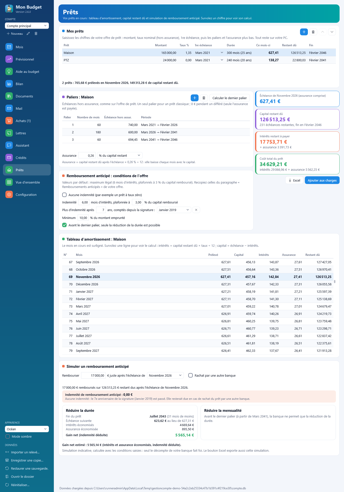
Saisir un prêt
« + » ajoute un prêt : nom, montant emprunté, taux nominal (hors assurance) et mois de la 1re échéance, tels qu'ils figurent sur l'offre de prêt.
Paliers : nombre de mois et échéance hors assurance de chaque palier (un seul pour un prêt classique). 0 € pendant un différé : seule l'assurance est payée. « Calculer le dernier palier » trouve l'échéance qui solde le prêt à la date prévue.
Durée : modifiable dans la liste des prêts (« 25 ans » ou « 300 » mois). Le dernier palier est allongé ou raccourci, et son échéance recalculée pour solder le prêt à la nouvelle date.
Assurance : taux sur le capital restant dû (elle baisse chaque mois), taux sur le montant emprunté, ou montant fixe par mois.
Conditions de remboursement anticipé : recopiez celles de l'offre. Par défaut, le maximum légal : 6 mois d'intérêts, plafonnés à 3 % du capital remboursé. Cochez « Aucune indemnité » pour un PTZ ; indiquez au bout de combien d'années l'indemnité disparaît (comptées depuis la signature), le minimum d'un remboursement partiel et la règle du dernier palier.
Lire les résultats
Les tuiles donnent l'échéance du mois, le capital restant dû, les intérêts restant à payer et le coût total du prêt.
Le tableau d'amortissement s'ouvre sur le mois en cours. Intérêts du mois = capital restant dû × taux ÷ 12 ; capital = échéance − intérêts ; la dernière échéance solde le prêt.
Excel exporte le prêt, ses paliers, le tableau et la simulation. Ajouter aux charges met l'échéance du mois dans les charges de la Configuration (à mettre à jour quand le palier change).
Simuler un remboursement anticipé
Choisissez le montant et le mois : le remboursement a lieu juste après l'échéance de ce mois. L'application calcule l'indemnité, puis compare Réduire la durée (mêmes échéances, fin plus tôt) et Réduire la mensualité (même fin, échéances plus basses) : intérêts et assurance économisés, gain net une fois l'indemnité déduite. Cochez « Rachat par une autre banque » si un autre prêt rembourse celui-ci.
Simulation indicative, calculée avec les conditions saisies : seul le décompte de la banque fait foi.
15. Bourse
Vos placements chez Trade Republic (PEA et compte-titres) : titres détenus, prix de revient, plus-values et dernier cours connu. Ils vont avec un compte de l'application : créez par exemple un compte « Trade Republic » avec la liste des comptes, ouvrez-le, puis importez l'export.
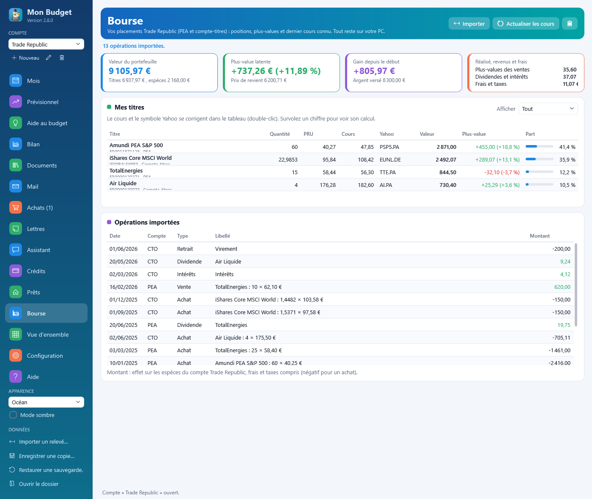
Chiffres indicatifs, calculés à partir de l'export : seuls les relevés et l'imprimé fiscal de Trade Republic font foi. La valeur du portefeuille s'ajoute aussi à la Vue d'ensemble.
Importer l'export de Trade Republic
Dans l'application Trade Republic du téléphone : touchez votre profil, puis « Relevés ».
Choisissez « Export des transactions », la période « Depuis le début », puis « Créer » : un fichier .csv est créé.
Envoyez-vous ce fichier (mail, Google Drive…) et enregistrez-le sur le PC.
Onglet Bourse › Importer : choisissez le fichier. Refaites un export de temps en temps : seules les nouvelles opérations sont ajoutées, celles déjà importées sont ignorées (ou corrigées si l'application les lit désormais autrement).
Lire les chiffres
Valeur du portefeuille : titres au dernier cours connu, plus les espèces non investies.
Prix de revient : prix moyen pondéré des achats, frais et taxes compris (la méthode des impôts). Une vente garde ce prix moyen pour les titres restants.
Plus-value latente : valeur des titres − prix de revient. Prévision de gain : valeur du portefeuille − argent versé (versements moins retraits).
Réalisé, revenus et frais (première tuile) : plus-values des ventes, frais et taxes d'achat compris dans le prix de revient comme pour les impôts (le chiffre « hors frais d'achat » en dessous est celui de Trade Republic), dividendes et intérêts bruts, taxes retenues, et le gain réalisé net.
Gain net et impôt : gain réalisé net, flat tax prévue (31,4 % depuis 2026, 30 % avant, des plus-values de l'année des ventes du compte-titres, 0 en cas de perte ; les dividendes sont déjà taxés par Trade Republic, le PEA n'est imposé qu'au retrait) et net après impôt. Prévision indicative.
Mes titres est rangé en deux parties, compte-titres puis PEA, chacune avec sa valeur totale. « Afficher » limite l'écran au PEA ou au compte-titres. La colonne Part montre la répartition entre les titres.
Aide à la décision
Des constats calculés sur tout le portefeuille, pas des conseils d'achat ou de vente : poids des frais (ordres où 1 € de frais pèse plus de 1 %), concentration (action seule au-delà de 25 % des titres), PEA ou compte-titres (date des 5 ans du PEA, actions européennes du compte-titres éligibles au PEA), fiscalité de l'année (moins-values latentes qui compenseraient les plus-values) et rythme des versements. Analyser avec l'Assistant ouvre l'Assistant avec un résumé du portefeuille (sans ISIN ni numéro de compte).
Les cours
Actualiser les cours cherche le dernier cours de chaque titre sur Yahoo Finance (gratuit, sans compte), de préférence sur une place en euros, et le convertit en euros si besoin. Seuls les codes ISIN des titres sont envoyés. Si un cours est introuvable ou faux, double-cliquez sur la case Cours pour le saisir, ou corrigez le code Yahoo (ex. CW8.PA). Sans cours, une ligne est estimée à son prix d'achat.
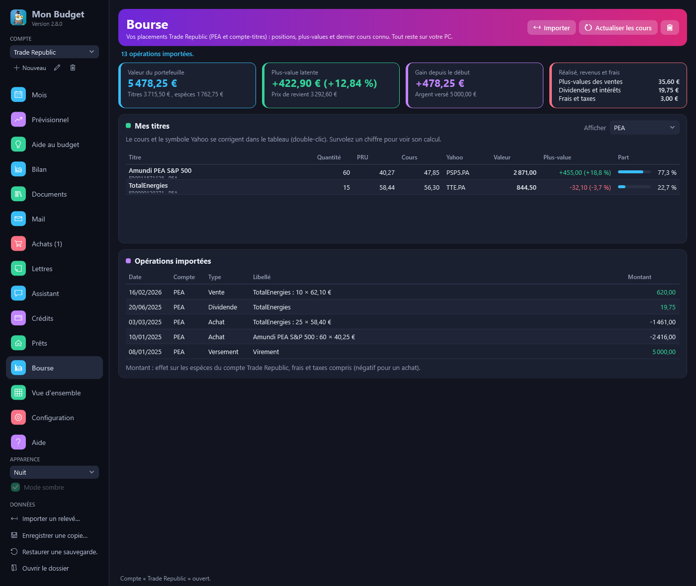
16. Impôts
Une estimation de l'impôt sur les revenus de l'année (déclarés au printemps suivant), calculée à partir de tous vos comptes : salaires, loyers et plus-values du module Bourse. Le module compare aussi avec le prélèvement à la source et propose des pistes chiffrées pour payer moins.
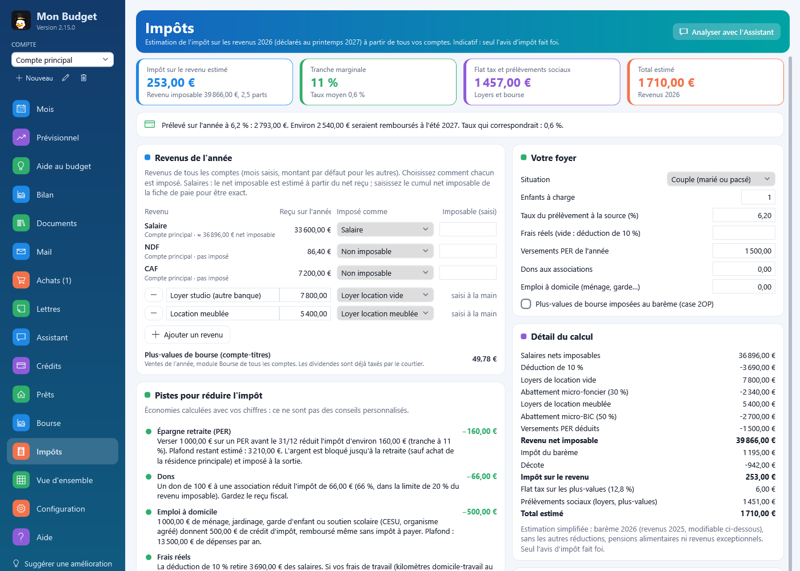
Les revenus
Chaque revenu des comptes est repris sur l'année : les mois saisis, et le montant par défaut de la configuration pour les mois pas encore créés.
Imposé comme : salaire, loyer de location vide, loyer de location meublée ou non imposable (CAF, remboursements…). Le choix est deviné d'après le nom et se garde.
Salaires : le net imposable est estimé à partir du net reçu (net reçu ÷ (1 − taux du prélèvement) × 1,03). Pour être exact, saisissez le cumul net imposable de la fiche de paie de décembre dans « Imposable (saisi) ».
Personne (salaires) : qui perçoit le salaire (vous, votre conjoint, un enfant rattaché). La déduction de 10 % (minimum 509 €, maximum 14 555 €) et le plafond PER se calculent pour chaque personne. Le job d'un enfant de 25 ans au plus est exonéré dans la limite de 3 SMIC mensuels (5 405 € pour les revenus 2025) : ne comptez que ce qui dépasse.
Ajouter un revenu : un revenu perçu ailleurs (loyer versé sur une autre banque, pension…), avec son montant de l'année.
Bourse : plus-values des ventes de l'année sur le compte-titres, tous comptes réunis (le PEA n'est imposé qu'au retrait, les dividendes sont déjà taxés par le courtier).
Le calcul
Salaires : déduction de 10 % par personne (ou vos frais réels). Location vide : micro-foncier, 30 % d'abattement, puis 17,2 % de prélèvements sociaux. Location meublée : micro-BIC, 50 % d'abattement, puis 18,6 %.
Barème par part, quotient familial plafonné, décote, réduction pour dons (66 %), crédit d'impôt emploi à domicile (50 %) et déduction des versements PER.
Plus-values : flat tax de 31,4 % (12,8 % d'impôt et 18,6 % de prélèvements sociaux), ou barème si la case 2OP est cochée.
Résultat : impôt estimé, tranche marginale, taux moyen, et ce qui resterait à payer ou serait remboursé avec votre taux de prélèvement à la source.
Pistes et barème
Les pistes refont le calcul avec un changement (1 000 € sur un PER, un don de 100 €, des dépenses d'emploi à domicile, l'option pour le barème…) et affichent l'économie. Analyser avec l'Assistant envoie le détail de l'estimation (montants seulement) à l'Assistant. La carte Barème et taux reprend la loi de finances 2026 : corrigez-la quand la loi change.
Estimation simplifiée et indicative : seul l'avis d'impôt fait foi. Les réglages sont gardés dans « impots.json », avec les données.
17. Vue d'ensemble
Tous vos comptes réunis : solde de fin de mois, évolution et point le plus bas de chacun, et le total sur 12 mois.
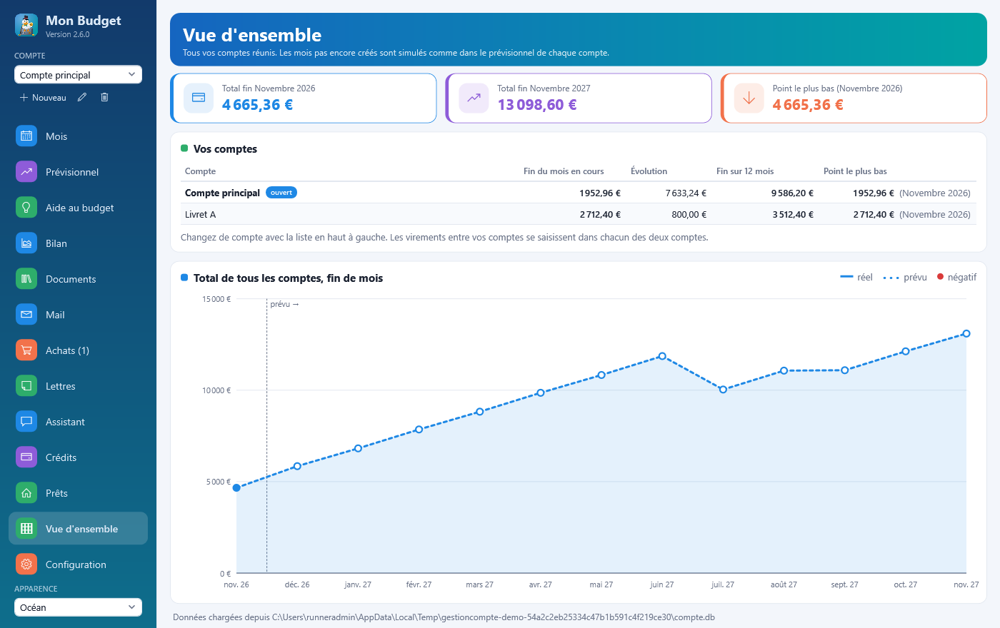
Un virement entre deux de vos comptes se saisit une seule fois : choisissez l'autre compte dans la colonne « Virement avec » du mois, ou de la charge dans Configuration pour un virement de chaque mois.
Quand un compte a des placements en bourse, une colonne « Bourse » et une tuile « Placements en bourse » s'ajoutent, avec le total des comptes et des placements.
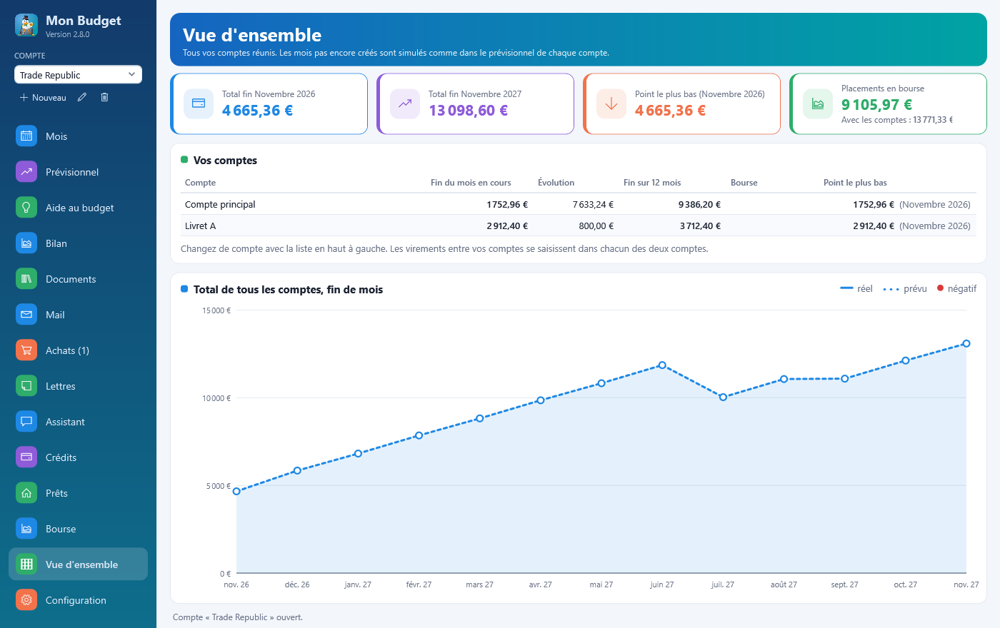
18. Configuration
Les réglages du compte ouvert et du PC, sur deux colonnes : les charges en haut, puis le budget à gauche et l'application à droite. Un clic sur le titre d'une carte la réduit (ou la rouvre) ; l'état est mémorisé.
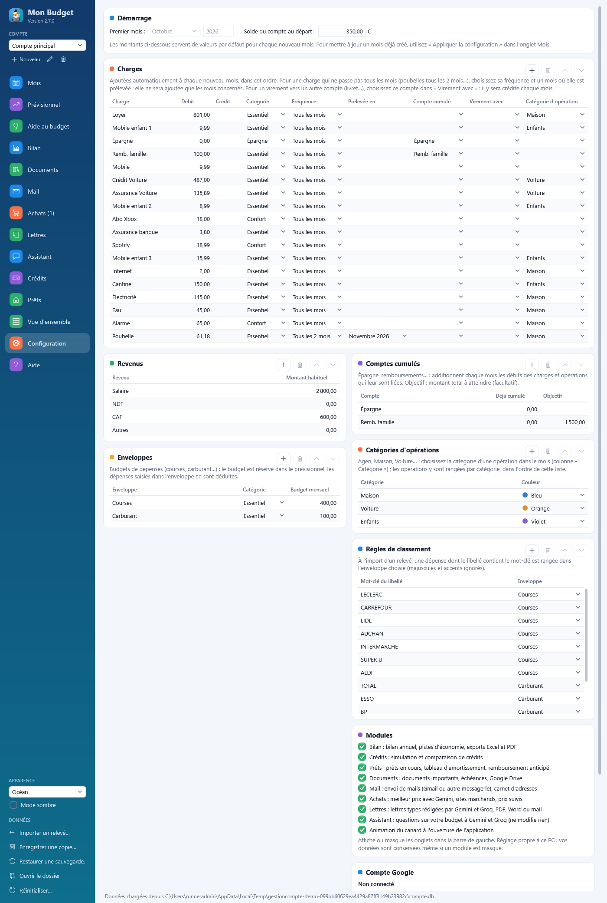
Carte
Rôle
Démarrage
Premier mois et solde du compte au départ.
Charges
Débits ajoutés à chaque nouveau mois : montant, catégorie (Essentiel, Confort, Épargne), fréquence (tous les mois, tous les 2, 3, 6 ou 12 mois, avec le mois de prélèvement), compte cumulé éventuel, catégorie d'opération reprise dans le mois et « Virement avec » : pour un virement de chaque mois vers un autre compte, la charge inverse est ajoutée à la configuration de ce compte et chaque nouveau mois a son virement des deux côtés.
Catégories d'opérations
Nom et couleur (10 au choix) ; l'ordre de la liste est l'ordre des groupes dans le mois.
Revenus
Montants habituels (salaire, CAF…).
Comptes cumulés
Épargne, remboursements… avec un objectif facultatif.
Enveloppes
Budgets de dépenses (courses, carburant) et leur catégorie.
Règles de classement
Mot-clé du libellé → enveloppe, utilisé à l'import des relevés.
Modules
Afficher ou masquer Bilan, Documents, Mail, Achats, Lettres, Assistant, Crédits, Prêts et Bourse, et changer leur ordre dans la barre de gauche avec les flèches ↑ ↓. Réglage propre au compte ouvert : un nouveau compte reprend celui du compte ouvert au moment de sa création. Vos données restent conservées même si un module est masqué. La case du canard règle l'animation d'ouverture.
Suggestions
« Suggérer une amélioration » ouvre le formulaire en ligne (la version de l'application est déjà remplie). Le lien des réponses ne concerne que l'auteur de l'application : il affiche l'onglet « Suggestions » avec les suggestions reçues, lues à chaque ouverture.
Compte Google
État « Connecté : adresse » ou « Non connecté », boutons Connecter, Reconnecter et Déconnecter. Pendant la connexion, la carte affiche l'étape en cours.
Stockage des données
Sur ce PC, ou dans Google Drive, chiffrées : voir le chapitre 20.
Intelligence artificielle
Case pour couper tout envoi aux IA, et clés Gemini, Groq et Mistral. Dans chaque module (Achats, Lettres, Assistant, Crédits), les cases « IA utilisées » choisissent les IA de ce module.
Mises à jour
Version installée et bouton « Rechercher une mise à jour ». L'application vérifie aussi au démarrage : si une nouvelle version existe, elle affiche ses nouveautés et demande avant d'installer. « Installer et redémarrer » remplace le programme ; vos données ne sont pas touchées.
Les montants de Configuration servent pour chaque nouveau mois. Pour un mois déjà créé, utilisez « Appliquer la configuration » dans l'onglet Mois.
19. Compte Google et IA gratuites
Connecter le compte Google
Configuration › Compte Google › « Connecter… ». La page de Google s'ouvre directement dans le navigateur.
Choisissez le compte Google. Sur « Google n'a pas validé cette application », cliquez sur « Paramètres avancés », puis « Accéder à… ».
Cochez les accès proposés (Drive, envoi de mails, contacts), puis « Continuer ».
La page « Connexion réussie » s'affiche : revenez dans l'application, la carte indique « Connecté ».
Chaque PC se connecte une fois ; la connexion est gardée ensuite. L'application ne voit dans votre Drive que les fichiers qu'elle a créés, et ne lit pas vos mails.
Clés d'IA gratuites
IA
Où créer la clé
À savoir
Gemini (Google)
Google AI Studio : aistudio.google.com, « Get API key »
Gratuit sans carte bancaire. Modèle Flash-Lite par défaut (environ 500 demandes par jour). Pas de recherche internet avec une clé gratuite.
Groq
console.groq.com/keys, « Create API Key »
Gratuit sans carte bancaire (environ 1 000 demandes par jour). Recherche internet possible (Achats, Taux du moment) ; si la clé la refuse, l'application le dit.
Mistral
console.mistral.ai/api-keys, offre « Experiment »
Gratuit sans carte bancaire (limites par minute). Recherche internet tentée ; si l'offre gratuite la refuse, Mistral répond de mémoire et l'application le dit.
Collez la clé dans Configuration › Intelligence artificielle › « Saisir la clé… ». Elle est chiffrée par Windows et reste sur votre PC (ou voyage, chiffrée, avec vos données dans Google Drive). Ne la communiquez à personne.
Tout reste gratuit tant qu'aucune carte bancaire ni compte de facturation n'est ajouté chez Google ou Groq. Si une limite du jour est atteinte, l'application le dit et indique quand réessayer.
20. Données dans Google Drive
Vos données peuvent vivre dans votre Google Drive plutôt que sur un seul PC : l'application les ouvre alors depuis n'importe quel ordinateur, même lancée depuis une clé USB.
Mettre les données dans Google Drive
Configuration › Stockage des données › « Stocker mes données dans Google Drive… » (le compte Google se connecte s'il ne l'est pas).
Choisissez un mot de passe (au moins 8 caractères) : il sera demandé à chaque ouverture.
Notez la clé de secours affichée (copier, enregistrer ou imprimer) : elle seule permet de choisir un nouveau mot de passe en cas d'oubli.
L'application redémarre et ouvre vos données depuis Google Drive.
Tout est chiffré (AES-256) sur le PC avant l'envoi : comptes, préférences, documents, clés des IA. Le dossier « Mon Budget - Données » de votre Drive ne contient que des fichiers illisibles sans votre mot de passe. Le dossier Documents\GestionCompte reste sur le PC : supprimez-le quand tout fonctionne.
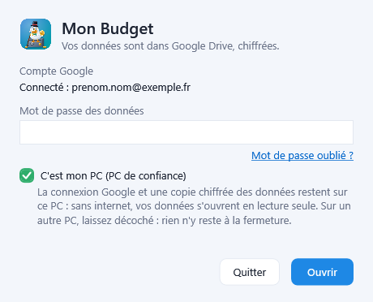
La fenêtre d'ouverture (compte d'exemple).
À chaque ouverture
Une fenêtre demande le compte Google (« Se connecter à Google » s'il ne l'est pas) et le mot de passe des données.
C'est mon PC (PC de confiance) : la connexion Google et une copie chiffrée restent sur ce PC. Sans internet, vos données s'ouvrent alors en lecture seule (les modifications ne sont pas gardées).
Sur un autre PC, laissez la case décochée : les données déchiffrées sont effacées à la fermeture et la connexion n'est pas gardée. Pensez à vous déconnecter de Google dans le navigateur.
Si l'application est déjà ouverte sur un autre PC, elle le dit : « Lecture seule » pour consulter, ou « Ouvrir quand même » (l'autre PC passe alors en lecture seule).
Pendant l'utilisation
Les modifications sont envoyées dans Google Drive au fil de la saisie et à la fermeture ; la carte Stockage des données indique l'heure du dernier envoi. Sans connexion, elles partent dès son retour ; si elles n'ont pas pu partir à la fermeture, l'application propose de réessayer.
Bouton
Rôle
Changer le mot de passe…
Nouveau mot de passe ; la clé de secours reste la même.
Préparer une clé USB…
Copie l'application sur la clé : lancée sur n'importe quel PC, elle ouvre directement vos données de Google Drive.
Remettre les données sur ce PC…
Recopie les données dans Documents\GestionCompte (l'ancien contenu est renommé, pas effacé) ; la copie de Google Drive n'est pas supprimée.
Mot de passe oublié : lien « Mot de passe oublié ? » de la fenêtre d'ouverture, puis la clé de secours.
21. Sauvegarde et confidentialité
Les données sont dans Documents\GestionCompte (un fichier par compte), ou dans Google Drive (chapitre 20). « Ouvrir le dossier » y mène directement.
Enregistrer une copie… sauvegarde le compte ouvert ; Restaurer une sauvegarde… la reprend. Sauvegarder tout… met tous les comptes, les préférences et le coffre de Documents dans un seul fichier .zip (sans les clés ni mots de passe) ; Restaurer tout… remplace tout par ce fichier, après une copie de sécurité, puis redémarre l'application. Gardez une copie sur une clé USB ou dans Google Drive.
Réinitialiser… efface les mois, ou tout, pour repartir de zéro (une confirmation est demandée).
Il n'existe aucun serveur Mon Budget : rien n'est envoyé au développeur. Seul ce que vous demandez part vers Google ou les IA, comme décrit dans chaque onglet. Les règles complètes sont sur la page « Règles de confidentialité » du dépôt GitHub (docs/confidentialite.md).
22. Aide
Ce manuel est aussi dans l'application : onglet Aide, en bas de la barre de gauche. Choisissez un chapitre dans la liste, ou tapez un mot dans « Rechercher » (sans vous soucier des accents) : seuls les chapitres qui le contiennent restent, et le mot est surligné.